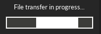
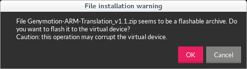
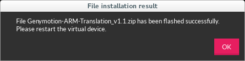
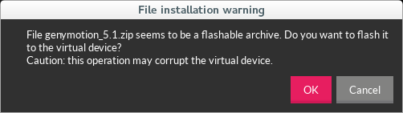
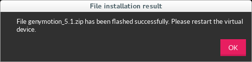

Table of Contents
Google Play Services în Genymotion
Configurare
În situația în care trebuie utilizate funcționalități accesibile prin intermediul Google Play Services sau în cazul în care trebuie descărcate aplicații din Play Store, vor trebui instalate manual ARM Transalation și Google Apps for Android întrucât suportul pentru acestea nu mai este asigurat începând cu versiunea 2.0 a emulatorului Genymotion.
- în Settings → ADB → ADB Tool Connection Settings se indică locația unde se găsește instalat SDK-ul de Android

- se instalează ARM Translation 1.1 printr-o operație de tip drag-and-drop în ecranul principal al emulatorului
- se afișează o fereastră de dialog ce va conține mesajul File transfer in progress…
 - odată realizat transferul, se afișează o fereastră de dialog prin care utilizatorul este atenționat de faptul că arhiva ar putea corupe dispozitivul virtual, solicitându-i-se acordul pentru a continua instalarea
 - odată realizată instalarea, se afișează o fereastră de dialog ce conține rezultatul operației

- se repornește emulatorul prin comanda
student@eim2016:/opt/android-sdk-linux/platform-tools$ ./adb -s 192.168.56.101:5555 reboot
(sau
adb rebootdacă există un sigur dispozitiv conectat la un moment dat) - se instalează Google Apps for Android corespunzătoare versiunii sistemului de operare existentă pe dispozitivul virtual, printr-o operație de tip drag-and-drop în ecranul principal al emulatorului (sunt parcurse aceleași etape ca anterior)

 - indiferent de rezultat, se repornește emulatorul prin comanda
student@eim2016:/opt/android-sdk-linux/platform-tools$ ./adb -s 192.168.56.101:5555 reboot
(respectiv
adb reboot) - este posibil ca procesul corespunzător Google Apps să fie oprit din cauza generării unor erori, acestea fiind afișate prin intermediul unor ferestre de dialog; astfel de erori pot fi ignorate

- se asociază datele unui cont Google (nume de utilizator, parola) din Settings → Accounts, selectându-se opțiunea Add account


- se actualizează Play Store prin accesarea opțiunii Settings de mai multe ori (procesul de actualizare va fi pornit în fundal, în mod automat)